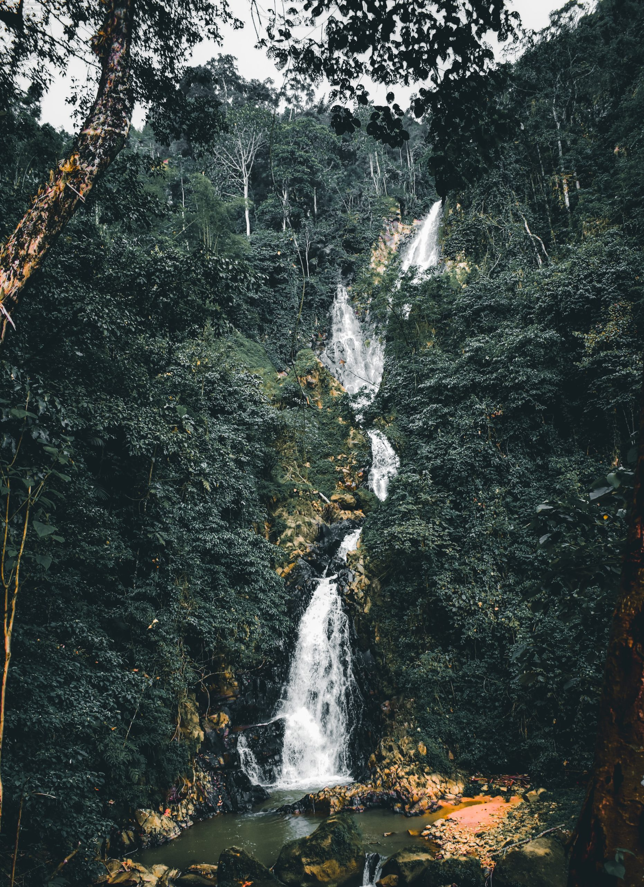
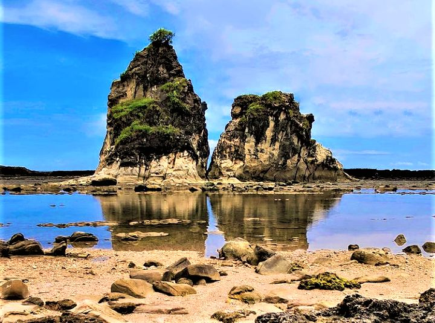
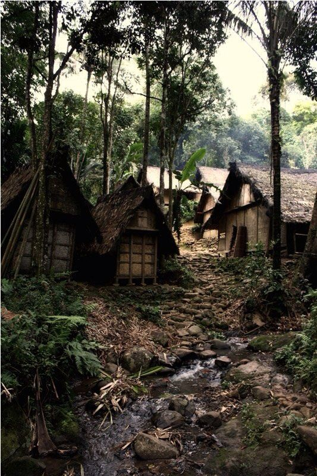
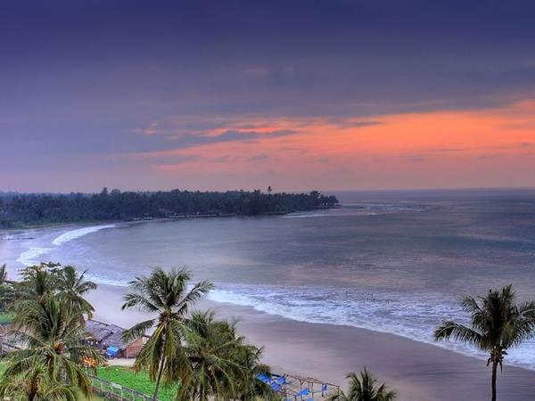

Curug

Sawarna

Baduy

Anyer
Banten, located on the western tip of Java Island in Indonesia, is
known for its rich history, cultural heritage, and natural beauty. It
boasts vibrant traditional arts, ancient temples, and landmarks like
the Old Banten City and the Great Mosque of Banten. The region is also
home to stunning beaches, such as Anyer and Tanjung Lesung, making it
a popular getaway. Additionally, Banten is a blend of modernity and
tradition, with industrial areas growing alongside the preservation of
its indigenous Baduy tribe, who maintain a simple, natural lifestyle.